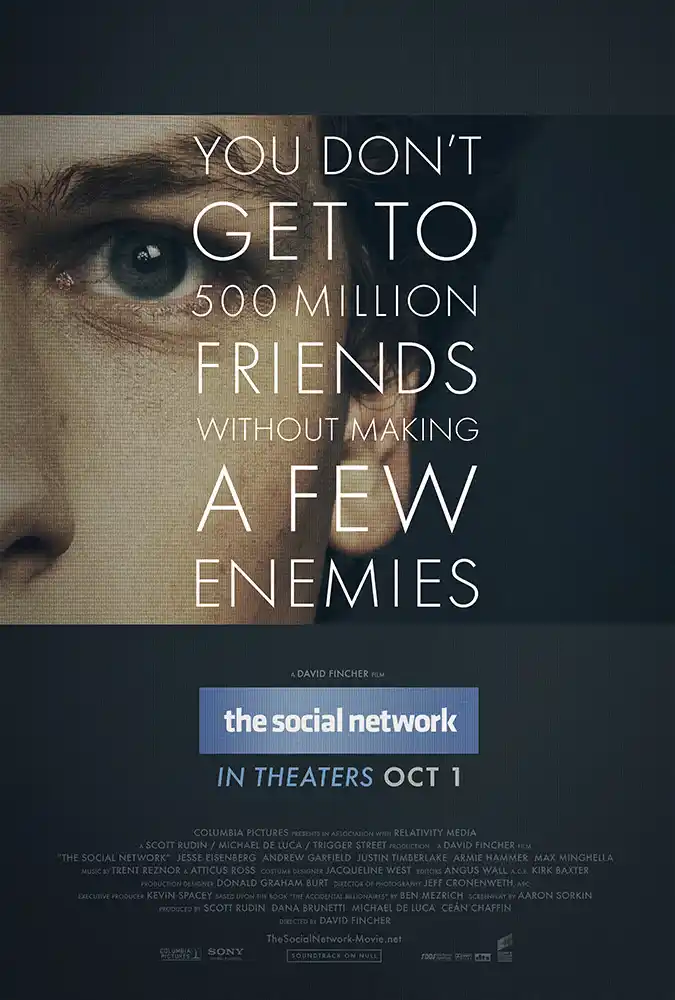

Résumé
The Social Network est un film de David Fincher sorti en 2010. Il raconte la création de Facebook par Mark Zuckerberg et les conflits qui ont suivi.

The Social Network est un film de David Fincher sorti en 2010. Il raconte la création de Facebook par Mark Zuckerberg et les conflits qui ont suivi.
88
Notre avis
Un film rythmé, aux dialogues très écrits, qui reste d'actualité.